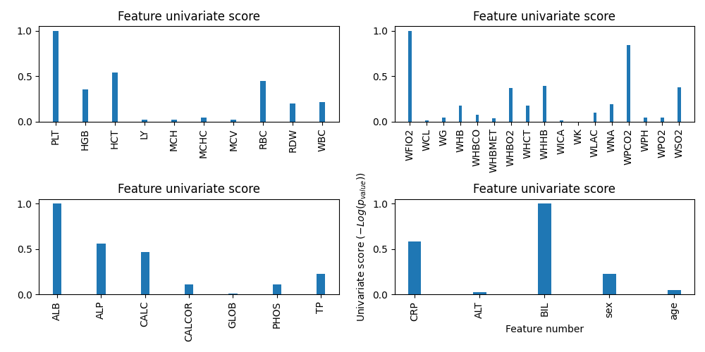

Overview of the dataset.
$ python 30-html-data-profile.py --path path_to_data
The correlation should be included in the data overview report automatically created by pandas-profile.
$ python 31-html-basic-info.py --path path_to_data
Open in a new tab.
See organism count.
The correlation should be included in the data overview report automatically created by pandas-profile.
$ python 32-html-feature-importance.py --path path_to_data

This section displays the evolution of the different bio-markers over time for each microorganism. The vertical line indicates day 0; that is, the day in which the microbiology sample was collected. The continuous bold line represents the mean value on that day for all the patients and the shadowed region the percentiles 25 and 75.
$ python 33-html-ts-biomarker-grid.py --path path_to_data
This section displays the co-occurrence (count and percentage)
$ python 31-html-basic-info.py --path path_to_data
This section displays the amount of data per patient. The x-axis contains the bio-markers, the y-axis the day (where 0 is date of microbiology sample) and the shaded area the region that was used to compute the ratio of completeness (e.g. -5, 5). The title on each figure includes the patient ID and the ratio of completeness.
$ python 34-html-hm-patient-data.py --path path_to_data
This section displays the parallel coordinates with all the results for the following binary classification problem: Is the microbiology outcome pathogenic (aka CNS)?.
$ python 35-html-gridsearch-parallel.py --path path_to_grid